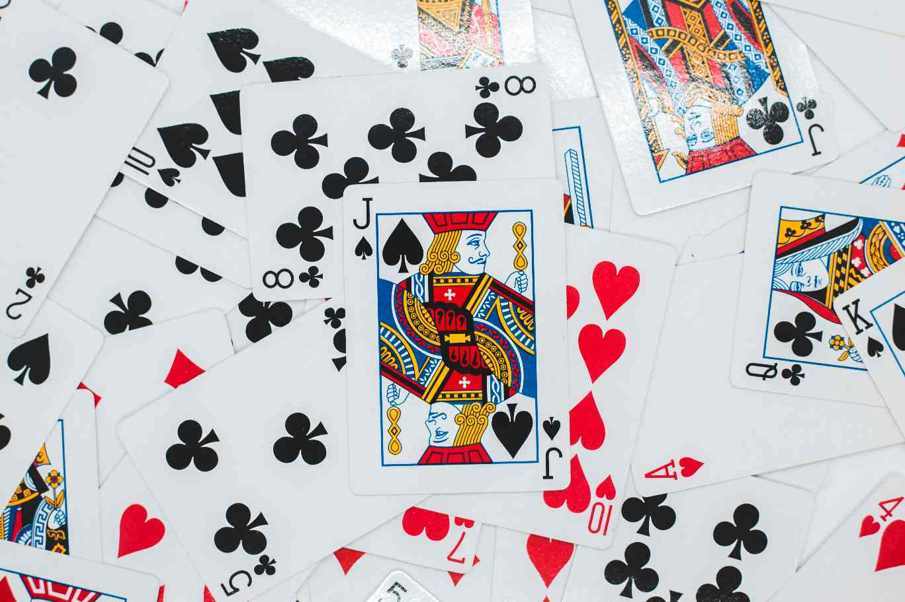
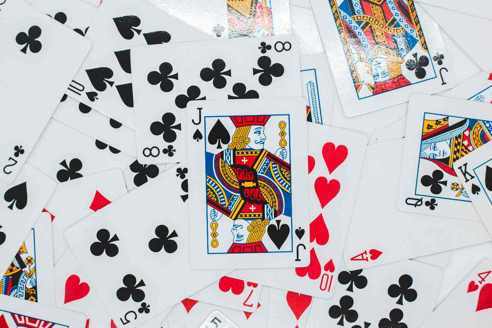

Learning and Teaching
A deck of cards is something everyone is familiar with, but learning new ways to use it will provide an aspect of curiosity. Using a common object that the majority of people own as the center of entertainment will make it even easier for nearly all visitors of the website to be able to use my content. Learning something new can sometimes be intimidating, but many visitors will take the time to apply themselves to learn, especially if they have a good reason. One of those reasons could be wanting to entertain a group of friends and/or family members. Teaching others how to play the games discovered on my site will solidify the learning curve and the games will be something they can use in many different situations and circumstances. They will likely recommend my site to their friends and family which will create an even bigger audience.
The Real Value
My site will draw many visitors because the entertainment offered is not the newest and most modern, but instead is a little retro. People love reflecting on the past and everyone has fond memories they dwell on. Before technology became so advanced, people with their families spent some of their time playing board and card games. This aspect of using cards will make people feel like they are “going back in time,” or catching a break from it all. Quality time and entertainment will also help the user and those involved feel happy and should have a positive influence on their emotional state.
 
